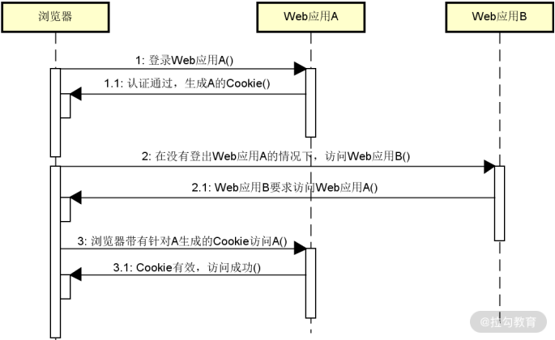
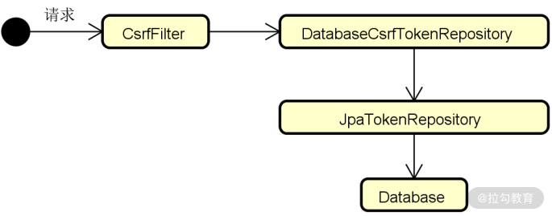
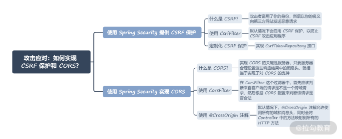

- 00 开篇词 Spring Security，为你的应用安全与职业之路保驾护航.md.html
- 01 顶级框架：Spring Security 是一款什么样的安全性框架？.md.html
- 02 用户认证：如何使用 Spring Security 构建用户认证体系？.md.html
- 03 认证体系：如何深入理解 Spring Security 用户认证机制？.md.html
- 04 密码安全：Spring Security 中包含哪些加解密技术？.md.html
- 05 访问授权：如何对请求的安全访问过程进行有效配置？.md.html
- 06 权限管理：如何剖析 Spring Security 的授权原理？.md.html
- 07 案例实战：使用 Spring Security 基础功能保护 Web 应用.md.html
- 08 管道过滤：如何基于 Spring Security 过滤器扩展安全性？.md.html
- 09 攻击应对：如何实现 CSRF 保护和跨域 CORS？.md.html
- 10 全局方法：如何确保方法级别的安全访问？.md.html
- 11 案例实战：使用 Spring Security 高级主题保护 Web 应用.md.html
- 12 开放协议：OAuth2 协议解决的是什么问题？.md.html
- 13 授权体系：如何构建 OAuth2 授权服务器？.md.html
- 14 资源保护：如何基于 OAuth2 协议配置授权过程？.md.html
- 15 令牌扩展：如何使用 JWT 实现定制化 Token？.md.html
- 16 案例实战：基于 Spring Security 和 Spring Cloud 构建微服务安全架构.md.html
- 17 案例实战：基于 Spring Security 和 OAuth2 实现单点登录.md.html
- 18 技术趋势：如何为 Spring Security 添加响应式编程特性？.md.html
- 19 测试驱动：如何基于 Spring Security 测试系统安全性？.md.html
- 20 结束语 以终为始，Spring Security 的学习总结.md.html
09 攻击应对：如何实现 CSRF 保护和跨域 CORS？
现在我们已经掌握了 Spring Security 提供的多项核心功能，但正如在开篇词中提到的，我们面临的系统安全性问题不止如此。今天我们就来讨论在日常开发过程中常见的两个安全性话题，即 CSRF 和 CORS。这两个缩写名称看似陌生，但和应用程序的每次请求都有关联，Spring Security 对它们也提供了良好的开发支持。
使用 Spring Security 提供 CSRF 保护
我们先来看 CSRF。CSRF 的全称是 Cross-Site Request Forgery，翻译成中文就是跨站请求伪造。那么，究竟什么是跨站请求伪造，面对这个问题我们又该如何应对呢？请继续往下看。
什么是 CSRF？
从安全的角度来讲，你可以将 CSRF 理解为一种攻击手段，即攻击者盗用了你的身份，然后以你的名义向第三方网站发送恶意请求。我们可以使用如下所示的流程图来描述 CSRF：

CSRF 运行流程图
具体流程如下：
- 用户浏览并登录信任的网站 A，通过用户认证后，会在浏览器中生成针对 A 网站的 Cookie；
- 用户在没有退出网站 A 的情况下访问网站 B，然后网站 B 向网站 A 发起一个请求；
- 用户浏览器根据网站 B 的请求，携带 Cookie 访问网站 A；
- 由于浏览器会自动带上用户的 Cookie，所以网站 A 接收到请求之后会根据用户具备的权限进行访问控制，这样相当于用户本身在访问网站 A，从而网站 B 就达到了模拟用户访问网站 A 的操作过程。
显然，从应用程序开发的角度来讲，CSRF 就是系统的一个安全漏洞，这种安全漏洞也在 Web 开发中广泛存在。
基于 CSRF 的工作流程，进行 CSRF 保护的基本思想就是为系统中的每一个连接请求加上一个随机值，我们称之为 csrf_token。这样，当用户向网站 A 发送请求时，网站 A 在生成的 Cookie 中就会设置一个 csrf_token 值。而在浏览器发送请求时，提交的表单数据中也有一个隐藏的 csrf_token 值，这样网站 A 接收到请求后，一方面从 Cookie 中提取出 csrf_token，另一方面也从表单提交的数据中获取隐藏的 csrf_token，将两者进行比对，如果不一致就代表这就是一个伪造的请求。
使用 CsrfFilter
在 Spring Security 中，专门提供了一个 CsrfFilter 来实现对 CSRF 的保护。CsrfFilter 拦截请求，并允许使用 GET、HEAD、TRACE 和 OPTIONS 等 HTTP 方法的请求。而针对 PUT、POST、DELETE 等可能会修改数据的其他请求，CsrfFilter 则希望接收包含 csrf_token 的消息头。如果这个消息头不存在或包含不正确的 csrf_token 值，应用程序将拒绝该请求并将响应的状态设置为 403。
看到这里，你可能会问，这个 csrf_token 到底长什么样子呢？其实它本质上就是一个字符串。在 Spring Security 中，专门定义了一个 CsrfToken 接口来约定它的格式：
public interface CsrfToken extends Serializable {
//获取消息头名称
String getHeaderName();
//获取应该包含 Token 的参数名称
String getParameterName();
//获取具体的 Token 值
String getToken();
}
而在 CsrfFilter 类中，我们也找到了如下所示的针对 CsrfToken 的处理过程：
@Override
protected void doFilterInternal(HttpServletRequest request,
HttpServletResponse response, FilterChain filterChain)
throws ServletException, IOException {
request.setAttribute(HttpServletResponse.class.getName(), response);
//从 CsrfTokenRepository 中获取 CsrfToken
CsrfToken csrfToken = this.tokenRepository.loadToken(request);
final boolean missingToken = csrfToken == null;
//如果找不到 CsrfToken 就生成一个并保存到 CsrfTokenRepository 中
if (missingToken) {
csrfToken = this.tokenRepository.generateToken(request);
this.tokenRepository.saveToken(csrfToken, request, response);
}
//在请求中添加 CsrfToken
request.setAttribute(CsrfToken.class.getName(), csrfToken);
request.setAttribute(csrfToken.getParameterName(), csrfToken);
if (!this.requireCsrfProtectionMatcher.matches(request)) {
filterChain.doFilter(request, response);
return;
}
//从请求中获取 CsrfToken
String actualToken = request.getHeader(csrfToken.getHeaderName());
if (actualToken == null) {
actualToken = request.getParameter(csrfToken.getParameterName());
}
//如果请求所携带的 CsrfToken 与从 Repository 中获取的不同，则抛出异常
if (!csrfToken.getToken().equals(actualToken)) {
if (this.logger.isDebugEnabled()) {
this.logger.debug("Invalid CSRF token found for "
+ UrlUtils.buildFullRequestUrl(request));
}
if (missingToken) {
this.accessDeniedHandler.handle(request, response,
new MissingCsrfTokenException(actualToken));
}
else {
this.accessDeniedHandler.handle(request, response,
new InvalidCsrfTokenException(csrfToken, actualToken));
}
return;
}
//正常情况下继续执行过滤器链的后续流程
filterChain.doFilter(request, response);
}
整个过滤器执行流程还是比较清晰的，基本就是围绕 CsrfToken 的校验工作。我们注意到这里引入了一个 CsrfTokenRepository，这个 Repository 组件实现了对 CsrfToken 的存储管理，其中就包含前面提到的专门针对 Cookie 的 CookieCsrfTokenRepository。从 CookieCsrfTokenRepository 中，首先我们能看到一组常量定义，包括针对 CSRF 的 Cookie 名称、参数名称以及消息头名称，如下所示：
static final String DEFAULT_CSRF_COOKIE_NAME = "XSRF-TOKEN";
static final String DEFAULT_CSRF_PARAMETER_NAME = "_csrf";
static final String DEFAULT_CSRF_HEADER_NAME = "X-XSRF-TOKEN";
CookieCsrfTokenRepository 的 saveToken() 方法也比较简单，就是基于 Cookie 对象进行了 CsrfToken 的设置工作，如下所示：
@Override
public void saveToken(CsrfToken token, HttpServletRequest request,
HttpServletResponse response) {
String tokenValue = token == null ? "" : token.getToken();
Cookie cookie = new Cookie(this.cookieName, tokenValue);
cookie.setSecure(request.isSecure());
if (this.cookiePath != null && !this.cookiePath.isEmpty()) {
cookie.setPath(this.cookiePath);
} else {
cookie.setPath(this.getRequestContext(request));
}
if (token == null) {
cookie.setMaxAge(0);
}
else {
cookie.setMaxAge(-1);
}
cookie.setHttpOnly(cookieHttpOnly);
if (this.cookieDomain != null && !this.cookieDomain.isEmpty()) {
cookie.setDomain(this.cookieDomain);
}
response.addCookie(cookie);
}
在 Spring Security 中，CsrfTokenRepository 接口具有一批实现类，除了 CookieCsrfTokenRepository，还有 HttpSessionCsrfTokenRepository 等，这里不再一一展开。
了解了 CsrfFilter 的基本实现流程，下面我们继续讨论如何使用它来实现 CSRF 保护。从 Spring Security 4.0 开始，默认启用 CSRF 保护，以防止 CSRF 攻击应用程序。Spring Security CSRF 会针对 POST、PUT 和 DELETE 方法进行防护。因此，对于开发人员而言，实际上你并不需要做什么额外工作就能使用这个功能了。当然，如果你不想使用这个功能，也可以通过如下配置方法进行关闭：
http.csrf().disable();
定制化 CSRF 保护
根据前面的讨论，如果你想获取 HTTP 请求中的 CsrfToken，只需要使用如下所示的代码：
CsrfToken token = (CsrfToken)request.getAttribute("_csrf");
如果你不想使用 Spring Security 内置的存储方式，而是想基于自身需求把 CsrfToken 存储起来，要做的事情就是实现 CsrfTokenRepository 接口。这里我们尝试把 CsrfToken 保存到关系型数据库中，所以可以通过扩展 Spring Data 中的 JpaRepository 来定义一个 JpaTokenRepository，如下所示：
public interface JpaTokenRepository extends JpaRepository<Token, Integer> {
Optional<Token> findTokenByIdentifier(String identifier);
}
JpaTokenRepository 很简单，只有一个根据 identifier 获取 Token 的查询方法，而新增接口则是 JpaRepository 默认提供的，我们可以直接使用。
然后，我们基于 JpaTokenRepository 来构建一个 DatabaseCsrfTokenRepository，如下所示：
public class DatabaseCsrfTokenRepository
implements CsrfTokenRepository {
@Autowired
private JpaTokenRepository jpaTokenRepository;
@Override
public CsrfToken generateToken(HttpServletRequest httpServletRequest) {
String uuid = UUID.randomUUID().toString();
return new DefaultCsrfToken("X-CSRF-TOKEN", "_csrf", uuid);
}
@Override
public void saveToken(CsrfToken csrfToken, HttpServletRequest httpServletRequest, HttpServletResponse httpServletResponse) {
String identifier = httpServletRequest.getHeader("X-IDENTIFIER");
Optional<Token> existingToken = jpaTokenRepository.findTokenByIdentifier(identifier);
if (existingToken.isPresent()) {
Token token = existingToken.get();
token.setToken(csrfToken.getToken());
} else {
Token token = new Token();
token.setToken(csrfToken.getToken());
token.setIdentifier(identifier);
jpaTokenRepository.save(token);
}
}
@Override
public CsrfToken loadToken(HttpServletRequest httpServletRequest) {
String identifier = httpServletRequest.getHeader("X-IDENTIFIER");
Optional<Token> existingToken = jpaTokenRepository.findTokenByIdentifier(identifier);
if (existingToken.isPresent()) {
Token token = existingToken.get();
return new DefaultCsrfToken("X-CSRF-TOKEN", "_csrf", token.getToken());
}
return null;
}
}
DatabaseCsrfTokenRepository 类的代码基本都是自解释的，这里借助了 HTTP 请求中的“X-IDENTIFIER”请求头来确定请求的唯一标识，从而将这一唯一标识与特定的 CsrfToken 关联起来。然后我们使用 JpaTokenRepository 完成了针对关系型数据库的持久化工作。
最后，想要上述代码生效，我们需要通过配置方法完成对 CSRF 的设置，如下所示，这里直接通过 csrfTokenRepository 方法集成了自定义的 DatabaseCsrfTokenRepository：
@Override
protected void configure(HttpSecurity http) throws Exception {
http.csrf(c -> {
c.csrfTokenRepository(databaseCsrfTokenRepository());
});
…
}
作为总结，我们可以用如下所示的示意图来梳理整个定制化 CSRF 所包含的各个组件以及它们之间的关联关系：

定制化 CSRF 的相关组件示意图
使用 Spring Security 实现 CORS
介绍完 CSRF，我们继续来看 Web 应用程序开发过程中另一个常见的需求——CORS，即跨域资源共享（Cross-Origin Resource Sharing）。那么问题来了，什么叫跨域？
什么是 CORS？
当下的 Web 应用程序开发基本都采用了前后端分离的开发模式，数据的获取并非同源，所以跨域问题在我们日常开发中特别常见。例如，当我们从“test.com”这个域名发起请求时，浏览器为了一定的安全因素考虑，并不会允许请求去访问“api.test.com”这个域名，因为请求已经跨越了两个域名。
请注意，跨域是浏览器的一种同源安全策略，是浏览器单方面限制的，所以仅在客户端运行在浏览器中才需要考虑这个问题。从原理上讲，实际就是浏览器在 HTTP 请求的消息头部分新增一些字段，如下所示：
//浏览器自己设置的请求域名
Origin
//浏览器告诉服务器请求需要用到哪些 HTTP 方法
Access-Control-Request-Method
//浏览器告诉服务器请求需要用到哪些 HTTP 消息头
Access-Control-Request-Headers
当浏览器进行跨域请求时会和服务器端进行一次的握手协议，从响应结果中可以获取如下信息：
//指定哪些客户端的域名允许访问这个资源
Access-Control-Allow-Origin
//服务器支持的 HTTP 方法
Access-Control-Allow-Methods
//需要在正式请求中加入的 HTTP 消息头
Access-Control-Allow-Headers
因此，实现 CORS 的关键是服务器。只要服务器合理设置这些响应结果中的消息头，就相当于实现了对 CORS 的支持，从而支持跨源通信。
使用 CorsFilter
和 CsrfFilter 注解一样，在 Spring 中也存在一个 CorsFilter 过滤器，不过这个过滤器并不是 Spring Security 提供的，而是来自Spring Web MVC。在 CorsFilter 这个过滤器中，首先应该判断来自客户端的请求是不是一个跨域请求，然后根据 CORS 配置来判断该请求是否合法，如下所示：
@Override
protected void doFilterInternal(HttpServletRequest request, HttpServletResponse response,
FilterChain filterChain) throws ServletException, IOException {
if (CorsUtils.isCorsRequest(request)) {
CorsConfiguration corsConfiguration = this.configSource.getCorsConfiguration(request);
if (corsConfiguration != null) {
boolean isValid = this.processor.processRequest(corsConfiguration, request, response);
if (!isValid || CorsUtils.isPreFlightRequest(request)) {
return;
}
}
}
filterChain.doFilter(request, response);
}
上述操作的内容是创建合适的配置类 CorsConfiguration。根据 CorsFilter，Spring Security 也在 HttpSecurity 工具类通过提供了 cors() 方法来创建 CorsConfiguration，使用方式如下所示：
@Override
protected void configure(HttpSecurity http) throws Exception {
http.cors(c -> {
CorsConfigurationSource source = request -> {
CorsConfiguration config = new CorsConfiguration();
config.setAllowedOrigins(Arrays.asList("*"));
config.setAllowedMethods(Arrays.asList("*"));
return config;
};
c.configurationSource(source);
});
…
}
我们可以通过 setAllowedOrigins() 和 setAllowedMethods() 方法实现对 HTTP 响应消息头的设置。这里将它们都设置成“*”，意味着所有请求都可以进行跨域访问。你也可以根据需要设置特定的域名和 HTTP 方法。
使用 @CrossOrigin 注解
通过 CorsFilter，我们实现了全局级别的跨域设置。但有时候，我们可能只需要针对某些请求实现这一功能，通过 Spring Security 也是可以做到这一点的，我们可以在特定的 HTTP 端点上使用如下所示的 @CrossOrigin 注解：
@Controller
public class TestController {
@PostMapping("/hello")
@CrossOrigin("http://api.test.com:8080")
public String hello() {
return "hello";
}
}
默认情况下，@CrossOrigin 注解允许使用所有的域和消息头，同时会将 Controller 中的方法映射到所有的 HTTP 方法。
小结与预告
这一讲关注的是对 Web 请求安全性的讨论，我们讨论了日常开发过程中常见的两个概念，即 CSRF 和 CORS。这两个概念有时候容易混淆，但应对的是完全不同的两种场景。
CSRF 是一种攻击行为，所以我们需要对系统进行保护，而 CORS 更多的是一种前后端开发模式上的约定。在 Spring Security 中，针对这两个场景都提供了对应的过滤器，我们只需要通过简单的配置方法就能在系统中自动集成想要的功能。
本讲主要内容如下：

最后我想给你留一道思考题：在 Spring Security 中，如何定制化一套对 CsrfToken 的处理机制？欢迎你在留言区和我分享观点。